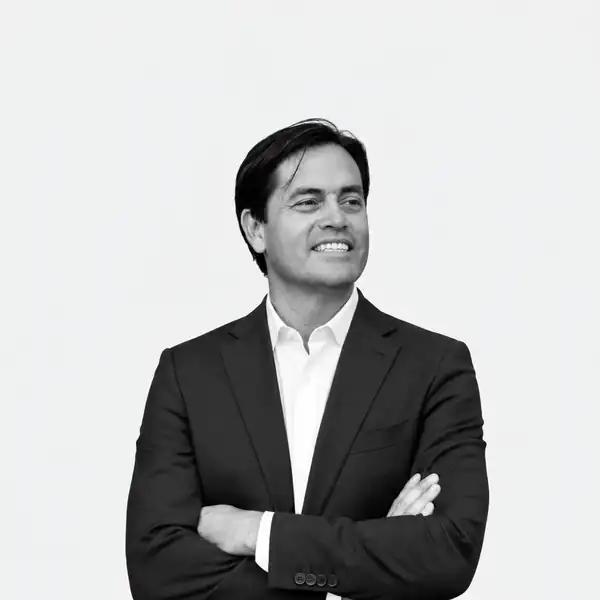

Crecer profesionalmente
Que tu experiencia, logros y criterio se reflejen de forma convincente en tu perfil de LinkedIn.

Tu experiencia merece ser visible. Transformamos trayectoria y conocimiento en una presencia estratégica en LinkedIn que construye autoridad y abre nuevas oportunidades.
Relato Estratégico no parte desde un paquete genérico. Parte desde el problema que necesitas resolver y construye una estrategia de posicionamiento coherente con tu trayectoria.
Que tu experiencia, logros y criterio se reflejen de forma convincente en tu perfil de LinkedIn.
Que futuros clientes comprendan qué sabes hacer, por qué tu mirada importa y por qué deberían confiar en ti.
Construir una voz reconocible, consistente y con una posición clara dentro de tu industria.
La mirada periodística aporta investigación, criterio editorial, contexto y capacidad narrativa. No se trata de hablar más, sino de construir una posición relevante y comunicarla con consistencia.
“Tu tarea es ser experto. La mía es hacerte visible.”
El blog será una herramienta de autoridad, educación y captación comercial.
Conversemos sobre el posicionamiento que quieres construir.
Agenda una conversación